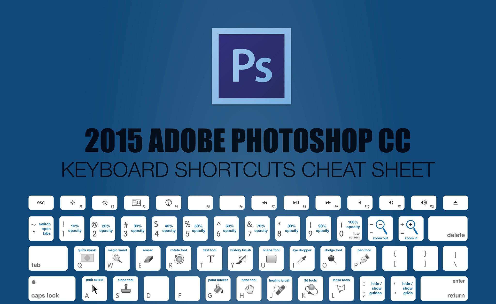
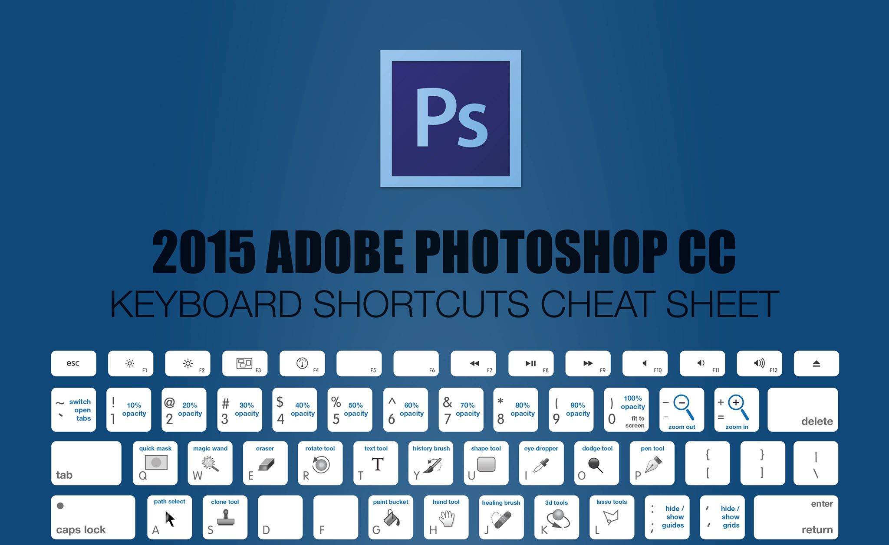

Photoshop
Photoshop er et program til billedebehandling som arbejder i pixels, men det kan også bruge til at lave grafik eller at manipulere med billederNår man arbejder i photoshop foregår det i layers, man kan altså arbejde i forskellilge lag, på forskellige elementer, uafhængigt af hinanden – hvis de befinder sig på hvert sit lag. Enkelte lag bliver ikke påvirket af hvad man foretager sig i andre lag, med mindre det er et adjustment layer, som bruges til at justere et andet lag. Dette lag bliver knyttet til det lag som ligger under det, og kan bruges til at ændre laget, og give effekter, uden at ændre selve laget – det bliver altså meget nemmere at enten fjerne eller ændre de ændringer man har lavet, uden at pille ved ”hovedlaget”. Det er også i lag man kan ligge effekter på et enkelt lag (layer effects), uafhængigt af de andre. Vi har f.eks. brug effekter som drop shadow og stroke.
Indenfor fritlægning er der 2 forskellige masker, en layer mask, som bliver brugt til generel fritlægning, og en clipping mask, som bliver brugt når man vil udskære noget fra et billede, f.eks. tekst (billede med kløver).
Layer mask bliver brugt til at skjule udvalgte dele af det lag, som man knytter det, f.eks. kan man vælge det det kun er det markerede der bliver vist -men her kan arbejder man non destructive, fordi man ødelægger ikke det originale billede.
I forhold til selection tools er der forskellige slags, der er bla. Lasso tool, hvor man selv skal tegne langs kanten på det element man gerne vil markere. Der er magic wand too, hvor man laver klik, hold i bund og træk metoden, og der er quick selection tool, som er magen til magic wand tool. Forskellen på de 2 er dog at ved quick selection tool er det muligt at fjerne markeringen igen, hvis man har fået markeret for meget, og det er ikke en mulighed ved magic wand tool.
 
